Packages used in this report
library(magrittr)
library(ggplot2)
library(forcats)
library(stringr)
library(dplyr)
library(tidyr)
library(scales)
library(fs)
requireNamespace("arrow")eda-5 — Dissecting the Primary Outcome Variable into Its 8 Reason Categories
This report provides an alternative take on Section 4.1 (Outcome Variable Construction) of stats_instructions_v3.md. Where eda-3 compared the primary outcome (days_absent_total) to the sensitivity outcome (days_absent_chronic) and reported the required distributional statistics, this EDA opens the “black box” of the total by examining the 8 individual LOP reason categories from which it is constructed.
Research Questions:
days_absent_total in absolute and relative terms?Following the dual-file development pattern, all analytical code lives in analysis/eda-5/eda-5.R. This document sources those chunks for presentation.
LOP module: Loss of Productivity module from the CCHS. Respondents are asked how many workdays they missed in the past 3 months due to each of 8 distinct health-related reasons.
days_absent_total: The primary outcome. Row-wise sum of all 8 LOP component variables (lopg040 + lopg070 + lopg082 through lopg086 + lopg100), capped at 90 days.
LOP reason categories (8 components):
| Variable | Reason |
|---|---|
lopg040 |
Own chronic condition |
lopg070 |
Injury |
lopg082 |
Cold |
lopg083 |
Flu / influenza |
lopg084 |
Gastroenteritis (stomach flu) |
lopg085 |
Respiratory infection |
lopg086 |
Other infectious disease |
lopg100 |
Other physical / mental health reason |
library(magrittr)
library(ggplot2)
library(forcats)
library(stringr)
library(dplyr)
library(tidyr)
library(scales)
library(fs)
requireNamespace("arrow")base::source("./scripts/common-functions.R")
base::source("./scripts/operational-functions.R")
if (file.exists("./scripts/graphing/graph-presets.R")) {
base::source("./scripts/graphing/graph-presets.R")
}local_root <- "./analysis/eda-5/"
local_data <- paste0(local_root, "data-local/")
prints_folder <- paste0(local_root, "prints/")
data_private_derived <- "./data-private/derived/eda-5/"
if (!fs::dir_exists(local_data)) fs::dir_create(local_data)
if (!fs::dir_exists(prints_folder)) fs::dir_create(prints_folder)
if (!fs::dir_exists(data_private_derived)) fs::dir_create(data_private_derived)
path_cchs2_parquet <- "./data-private/derived/cchs-2-tables"
path_analytical_pq <- file.path(path_cchs2_parquet, "cchs_analytical.parquet")
weight_col <- "wts_m_pooled"
# LOP component columns and their human-readable labels
lop_components <- c(
"lopg040" = "Chronic condition",
"lopg070" = "Injury",
"lopg082" = "Cold",
"lopg083" = "Flu / influenza",
"lopg084" = "Gastroenteritis",
"lopg085" = "Respiratory infection",
"lopg086" = "Other infectious disease",
"lopg100" = "Other physical / mental health"
)if (!file.exists(path_analytical_pq)) {
stop("Missing required file: ", path_analytical_pq, call. = FALSE)
}
ds0 <- arrow::read_parquet(path_analytical_pq)
required_cols <- c("adm_rno", weight_col, "days_absent_total", "cycle", "cycle_f",
names(lop_components))
missing_required <- setdiff(required_cols, names(ds0))
if (length(missing_required) > 0) {
stop("Missing required columns in cchs_analytical.parquet: ",
paste(missing_required, collapse = ", "), call. = FALSE)
}
cat(sprintf("Loaded analytical data: %s rows, %s columns\n",
format(nrow(ds0), big.mark = ","),
format(ncol(ds0), big.mark = ",")))Loaded analytical data: 63,843 rows, 62 columnsFor complete data documentation, see the Data Primer.
data_context_tables <- tibble::tibble(
source_table = "cchs_analytical.parquet",
location = path_analytical_pq,
rows = nrow(ds0),
columns = ncol(ds0),
usage = "All 8 raw LOP component columns + derived days_absent_total and survey weights"
)# One representative individual showing all LOP components and the derived total
data_context_person <- ds0 %>%
select(adm_rno, cycle_f, !!weight_col,
days_absent_total, all_of(names(lop_components))) %>%
filter(rowSums(!is.na(select(., all_of(names(lop_components))))) >= 3) %>%
slice_head(n = 2)# Non-missing counts per LOP component
data_context_distributions <- ds0 %>%
summarise(
across(
all_of(names(lop_components)),
list(
n_nonmissing = ~ sum(!is.na(.x)),
n_positive = ~ sum(.x > 0, na.rm = TRUE),
pct_positive = ~ mean(.x > 0, na.rm = TRUE) * 100
)
)
) %>%
tidyr::pivot_longer(
cols = everything(),
names_to = c("column", ".value"),
names_pattern = "^(.+)_(n_nonmissing|n_positive|pct_positive)$"
)# Long-form LOP component dataset for family-level reuse
ds_lop_long <- ds0 %>%
select(adm_rno, cycle, cycle_f, !!weight_col,
days_absent_total, all_of(names(lop_components))) %>%
tidyr::pivot_longer(
cols = all_of(names(lop_components)),
names_to = "lop_col",
values_to = "days_reason"
) %>%
mutate(
reason_label = lop_components[lop_col],
reason_label = factor(reason_label, levels = lop_components),
has_days = !is.na(days_reason) & days_reason > 0
)Framing question: How does the analytical sample split between workers who reported no missed days and those who missed at least one?
# Zero vs non-zero absenteeism: overall split in the analytical sample
g0_data <- ds0 %>%
mutate(
absent_group = dplyr::if_else(
!is.na(days_absent_total) & days_absent_total >= 1,
"At least one missed day",
"No missed days (zero)"
),
absent_group = factor(
absent_group,
levels = c("No missed days (zero)", "At least one missed day")
)
) %>%
group_by(absent_group) %>%
summarise(
n_people = n(),
wt_people = sum(.data[[weight_col]], na.rm = TRUE),
.groups = "drop"
) %>%
mutate(
pct_n = n_people / sum(n_people) * 100,
pct_wt = wt_people / sum(wt_people) * 100
)# Horizontal stacked bar: zero vs ≥1 absent day, unweighted n and weighted %
# Labels placed inside the bars
g0_labels <- g0_data %>%
mutate(
bar_label = sprintf("%s\nn = %s (%.1f%%)",
absent_group,
scales::comma(n_people),
pct_n)
)
g0_lop_zero_vs_nonzero <- g0_data %>%
ggplot(aes(x = pct_wt, y = "Analytical sample", fill = absent_group)) +
geom_col(width = 1.0, alpha = 0.88) +
geom_text(
data = g0_labels,
aes(
x = pct_wt,
label = sprintf("n = %s\n%.1f%%", scales::comma(n_people), pct_n)
),
position = position_stack(vjust = 0.5),
size = 3.4,
colour = "white",
fontface = "bold",
lineheight = 1.1
) +
scale_x_continuous(
labels = label_percent(scale = 1),
expand = expansion(mult = c(0, 0.02))
) +
scale_fill_manual(values = c("No missed days (zero)" = "#4575b4",
"At least one missed day" = "#d73027")) +
labs(
title = "Q4-1 (Alt / G0): Zero vs non-zero absenteeism in the analytical sample",
subtitle = sprintf(
"Total analytical sample: n = %s respondents",
scales::comma(sum(g0_data$n_people))
),
x = "Weighted share of respondents (%)",
y = NULL,
fill = NULL,
caption = "Source: CCHS 2010–11 & 2013–14 pooled analytical sample"
) +
theme_minimal(base_size = 11) +
theme(
axis.text.y = element_blank(),
axis.ticks.y = element_blank(),
panel.grid.major.y = element_blank(),
legend.position = "bottom"
)
ggsave(
paste0(prints_folder, "g0_lop_zero_vs_nonzero.png"),
g0_lop_zero_vs_nonzero,
width = 10,
height = 3,
dpi = 300
)
print(g0_lop_zero_vs_nonzero)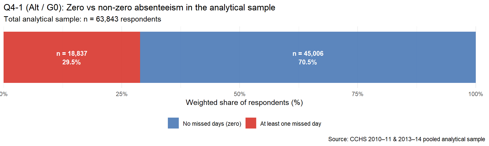
# Shared setup for g01 and g02: restrict to respondents with ≥1 missed day
# and assign day-range category (used for shared colour scale)
day_range_levels <- c("1 day", "2 days", "3 days", "4 days", "5 days",
"6\u201310 days", "11\u201315 days", "16\u201330 days", "31+ days")
day_range_colours <- c(
"1 day" = "#f7941d",
"2 days" = "#e8601c",
"3 days" = "#cc3311",
"4 days" = "#aa1133",
"5 days" = "#880044",
"6\u201310 days" = "#6a0177",
"11\u201315 days" = "#49006a",
"16\u201330 days" = "#2d004b",
"31+ days" = "#0d0014"
)
ds_nonzero <- ds0 %>%
filter(!is.na(days_absent_total), days_absent_total >= 1) %>%
mutate(
day_range = dplyr::case_when(
days_absent_total == 1 ~ "1 day",
days_absent_total == 2 ~ "2 days",
days_absent_total == 3 ~ "3 days",
days_absent_total == 4 ~ "4 days",
days_absent_total == 5 ~ "5 days",
days_absent_total <= 10 ~ "6\u201310 days",
days_absent_total <= 15 ~ "11\u201315 days",
days_absent_total <= 30 ~ "16\u201330 days",
TRUE ~ "31+ days"
),
day_range = factor(day_range, levels = day_range_levels)
)# Frequency histogram: x = total days missed, y = respondents
# Bars coloured by the same day-range palette used in g02
g01_hist_data <- ds_nonzero %>%
count(days_absent_total, day_range)
g01_lop_days_histogram <- g01_hist_data %>%
ggplot(aes(x = days_absent_total, y = n, fill = day_range)) +
geom_col(width = 0.9, alpha = 0.90) +
geom_col(data = ~ filter(.x, days_absent_total == 1),
width = 0.9, colour = "black", fill = NA, alpha = 0.5) +
scale_x_continuous(
breaks = c(1, 5, 10, 15, 20, 25, 30, 40, 50, 63),
expand = expansion(mult = c(0.01, 0.02))
) +
scale_y_continuous(
labels = scales::label_comma(),
expand = expansion(mult = c(0, 0.05))
) +
scale_fill_manual(values = day_range_colours) +
labs(
title = "G01: Frequency distribution of total missed days (respondents with ≥1 day)",
subtitle = sprintf("n = %s respondents; x-axis capped at observed maximum",
scales::comma(nrow(ds_nonzero))),
x = "Total days absent (days_absent_total)",
y = "Number of respondents",
fill = "Day range",
caption = "Source: CCHS 2010\u201311 & 2013\u201314 pooled analytical sample"
) +
theme_minimal(base_size = 11) +
theme(legend.position = "bottom")
ggsave(
paste0(prints_folder, "g01_lop_days_histogram.png"),
g01_lop_days_histogram,
width = 10,
height = 5,
dpi = 300
)
print(g01_lop_days_histogram)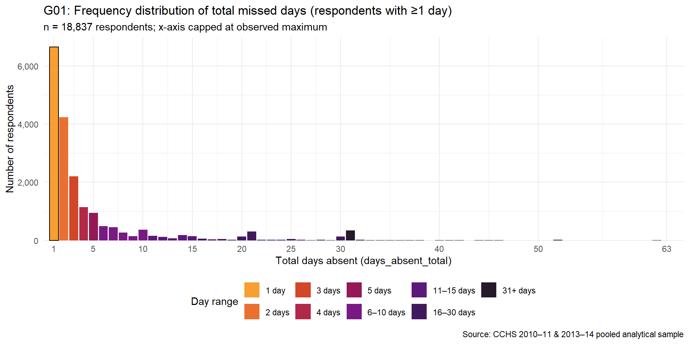
# Summarise the same ≥1-day group by day-range category for stacked bar
g02_data <- ds_nonzero %>%
group_by(day_range) %>%
summarise(
n_people = n(),
wt_people = sum(.data[[weight_col]], na.rm = TRUE),
.groups = "drop"
) %>%
mutate(
pct_n = n_people / sum(n_people) * 100,
pct_wt = wt_people / sum(wt_people) * 100
)# Horizontal stacked bar: day-range breakdown for respondents with ≥1 day
g02_lop_day_ranges <- g02_data %>%
ggplot(aes(x = pct_wt, y = "Respondents with \u22651 day", fill = day_range)) +
geom_col(width = 1.0, alpha = 0.90) +
geom_text(
aes(label = sprintf("%s - %.0f%%",
stringr::str_remove(as.character(day_range), " days?$"),
pct_n)),
position = position_stack(vjust = 0.5),
angle = 90,
size = 3.0,
colour = "white",
fontface = "bold",
lineheight = 1.1
) +
scale_x_continuous(
labels = scales::label_percent(scale = 1),
expand = expansion(mult = c(0, 0.02))
) +
scale_fill_manual(values = day_range_colours) +
labs(
title = "G02: Day-range breakdown among respondents with \u22651 missed day",
subtitle = sprintf("Total: n = %s respondents with at least one missed workday",
scales::comma(nrow(ds_nonzero))),
x = "Weighted share (%)",
y = NULL,
fill = "Day range",
caption = "Source: CCHS 2010\u201311 & 2013\u201314 pooled analytical sample"
) +
theme_minimal(base_size = 11) +
theme(
axis.text.y = element_blank(),
axis.ticks.y = element_blank(),
panel.grid.major.y = element_blank(),
legend.position = "top",
legend.box.margin = margin(0, 0, -12, 0)
) +
guides(fill = guide_legend(nrow = 1, reverse = TRUE))
ggsave(
paste0(prints_folder, "g02_lop_day_ranges.png"),
g02_lop_day_ranges,
width = 10,
height = 4,
dpi = 300
)
print(g02_lop_day_ranges)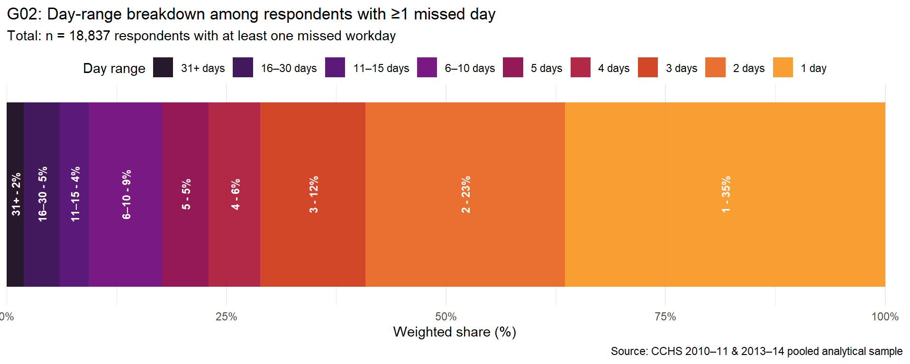
Research Question 1: What proportion of workers missed ≥1 workday for each of the 8 reason categories?
# RQ1: Weighted prevalence of each LOP reason category (% reporting ≥1 day)
g1_data <- ds_lop_long %>%
group_by(reason_label) %>%
summarise(
n_total = n(),
n_positive = sum(has_days, na.rm = TRUE),
wt_positive = sum(.data[[weight_col]][has_days], na.rm = TRUE),
wt_total = sum(.data[[weight_col]], na.rm = TRUE),
pct_weighted = wt_positive / wt_total * 100,
pct_unweighted = n_positive / n_total * 100,
.groups = "drop"
) %>%
arrange(desc(pct_weighted)) %>%
mutate(reason_label = forcats::fct_reorder(reason_label, pct_weighted))# Horizontal bar chart: weighted prevalence per reason, ordered descending
g1_lop_prevalence <- g1_data %>%
ggplot(aes(x = pct_weighted, y = reason_label)) +
geom_col(fill = "#2c7bb6", alpha = 0.85, width = 0.65) +
geom_text(
aes(label = sprintf("%.1f%%", pct_weighted)),
hjust = -0.15,
size = 3.2
) +
scale_x_continuous(
labels = label_percent(scale = 1),
expand = expansion(mult = c(0, 0.15))
) +
labs(
title = "Q4-1 (Alt): Weighted prevalence of each LOP reason category",
subtitle = "Proportion of analytical-sample respondents reporting ≥1 absent day per reason",
x = "Weighted % of respondents with ≥1 day absent",
y = NULL,
caption = "Source: CCHS 2010–11 & 2013–14 pooled analytical sample (n = 63,843)"
) +
theme_minimal(base_size = 11) +
theme(panel.grid.major.y = element_blank())
ggsave(
paste0(prints_folder, "g1_lop_prevalence.png"),
g1_lop_prevalence,
width = 8.5,
height = 5.5,
dpi = 300
)
print(g1_lop_prevalence)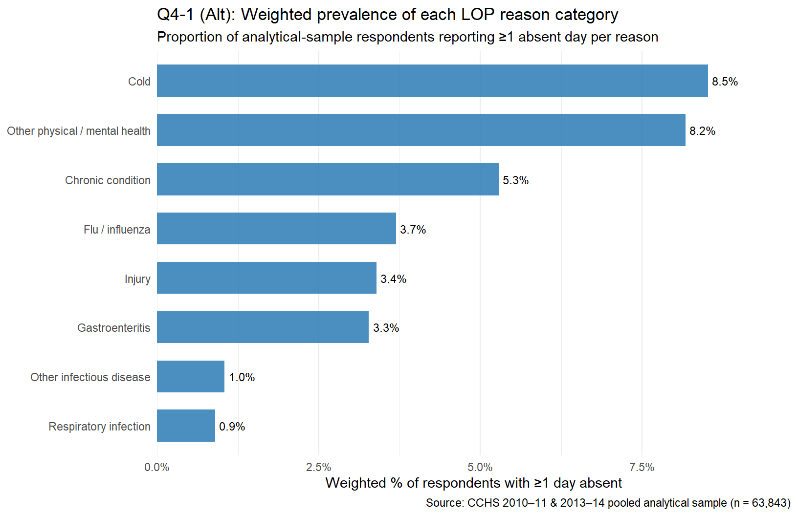
# Faceted version: prevalence by cycle (2011 vs 2014)
g1_data_by_cycle <- ds_lop_long %>%
group_by(reason_label, cycle_f) %>%
summarise(
wt_positive = sum(.data[[weight_col]][has_days], na.rm = TRUE),
wt_total = sum(.data[[weight_col]], na.rm = TRUE),
pct_weighted = wt_positive / wt_total * 100,
.groups = "drop"
) %>%
mutate(reason_label = forcats::fct_reorder(reason_label, pct_weighted,
.fun = mean, .desc = FALSE))
g11_lop_prevalence_by_cycle <- g1_data_by_cycle %>%
ggplot(aes(x = pct_weighted, y = reason_label, fill = cycle_f)) +
geom_col(position = position_dodge(width = 0.7), width = 0.6, alpha = 0.85) +
scale_x_continuous(
labels = label_percent(scale = 1),
expand = expansion(mult = c(0, 0.12))
) +
scale_fill_manual(values = c("#2c7bb6", "#d7191c")) +
labs(
title = "Q4-1 (Alt): LOP reason prevalence by survey cycle",
subtitle = "Weighted % of respondents with ≥1 absent day per reason, 2011 vs 2014",
x = "Weighted % of respondents",
y = NULL,
fill = "Cycle"
) +
theme_minimal(base_size = 11) +
theme(
panel.grid.major.y = element_blank(),
legend.position = "bottom"
)
ggsave(
paste0(prints_folder, "g11_lop_prevalence_by_cycle.png"),
g11_lop_prevalence_by_cycle,
width = 8.5,
height = 5.5,
dpi = 300
)
print(g11_lop_prevalence_by_cycle)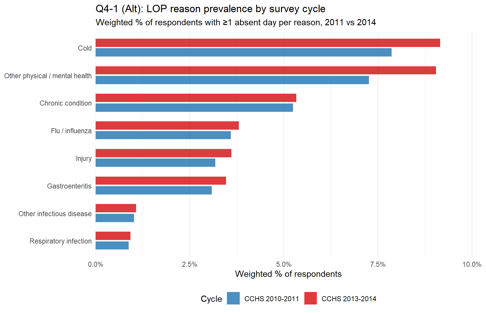
Research Question 2: How much does each LOP reason contribute to the weighted mean of days_absent_total?
# RQ2: Contribution of each LOP component to the weighted mean total outcome
g2_data <- ds_lop_long %>%
group_by(reason_label) %>%
summarise(
wt_mean_days = sum(.data[[weight_col]] * days_reason, na.rm = TRUE) /
sum(.data[[weight_col]], na.rm = TRUE),
.groups = "drop"
) %>%
arrange(desc(wt_mean_days)) %>%
mutate(
reason_label = forcats::fct_reorder(reason_label, wt_mean_days),
pct_of_total = wt_mean_days / sum(wt_mean_days) * 100
)
# Overall weighted mean of days_absent_total for reference
total_wt_mean <- sum(ds0[[weight_col]] * ds0$days_absent_total, na.rm = TRUE) /
sum(ds0[[weight_col]], na.rm = TRUE)# Dot-strip plot: weighted mean days per reason, with % share labels
g2_lop_contribution <- g2_data %>%
ggplot(aes(x = wt_mean_days, y = reason_label)) +
geom_segment(aes(xend = 0, yend = reason_label),
colour = "grey70", linewidth = 0.6) +
geom_point(aes(size = pct_of_total), colour = "#2c7bb6", alpha = 0.9) +
geom_text(
aes(label = sprintf("%.2f d (%.0f%%)", wt_mean_days, pct_of_total)),
hjust = -0.15,
size = 3.1
) +
scale_x_continuous(expand = expansion(mult = c(0, 0.35))) +
scale_size_continuous(range = c(2, 8), guide = "none") +
labs(
title = "Q4-1 (Alt): Weighted mean days absent attributed to each LOP reason",
subtitle = sprintf(
"Point size proportional to share of total; reference weighted mean (days_absent_total) = %.2f days",
total_wt_mean
),
x = "Weighted mean days absent (all respondents)",
y = NULL,
caption = "Source: CCHS 2010–11 & 2013–14 pooled analytical sample"
) +
theme_minimal(base_size = 11) +
theme(panel.grid.major.y = element_blank())
ggsave(
paste0(prints_folder, "g2_lop_contribution.png"),
g2_lop_contribution,
width = 8.5,
height = 5.5,
dpi = 300
)
print(g2_lop_contribution)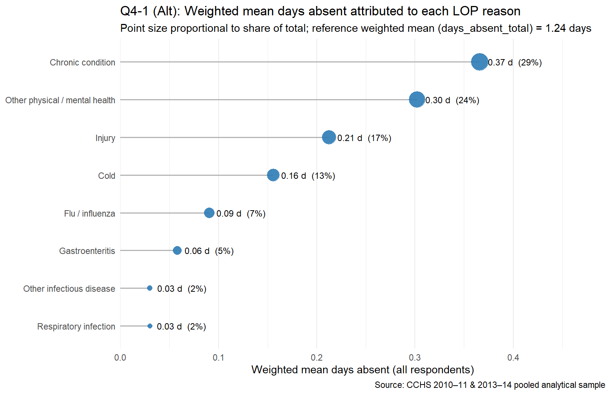
# Stacked bar: relative contribution of each LOP reason to the total
g2_stacked_data <- g2_data %>%
mutate(
reason_label_short = stringr::str_wrap(as.character(reason_label), 20),
reason_label_short = forcats::fct_reorder(reason_label_short, pct_of_total, .desc = TRUE)
)
g21_lop_contribution_stacked <- g2_stacked_data %>%
ggplot(aes(x = 1, y = pct_of_total, fill = reason_label)) +
geom_col(width = 0.5, alpha = 0.88) +
geom_text(
aes(label = ifelse(pct_of_total > 4,
sprintf("%s\n%.0f%%", reason_label, pct_of_total), "")),
position = position_stack(vjust = 0.5),
size = 3.0, colour = "white", fontface = "bold"
) +
scale_y_continuous(labels = label_percent(scale = 1)) +
scale_fill_brewer(palette = "Set2") +
labs(
title = "Q4-1 (Alt): Relative share of each LOP reason in total absent-day burden",
subtitle = "Weighted mean days per reason as % of the component sum",
x = NULL,
y = "Share of total weighted-mean days (%)",
fill = "LOP reason"
) +
theme_minimal(base_size = 11) +
theme(
axis.text.x = element_blank(),
axis.ticks.x = element_blank(),
panel.grid.major.x = element_blank()
)
ggsave(
paste0(prints_folder, "g21_lop_contribution_stacked.png"),
g21_lop_contribution_stacked,
width = 8.5,
height = 5.5,
dpi = 300
)
print(g21_lop_contribution_stacked)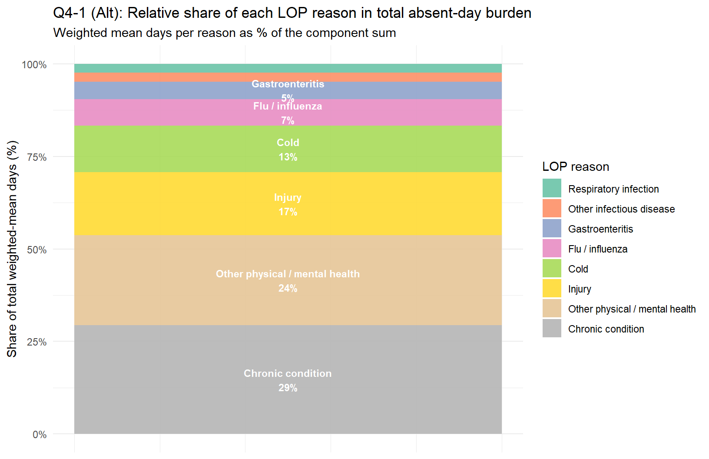
Research Question 3: How many categories does a typical respondent report, and which reason pairs co-occur most often?
# RQ3: Co-occurrence — how many reason categories per respondent, and which pairs co-occur
# Number of reasons reported (≥1 day) per respondent
g3_count_data <- ds0 %>%
select(adm_rno, cycle_f, !!weight_col, all_of(names(lop_components))) %>%
mutate(
n_reasons = rowSums(across(all_of(names(lop_components)), ~ !is.na(.x) & .x > 0),
na.rm = TRUE)
)
g3_dist <- g3_count_data %>%
group_by(n_reasons) %>%
summarise(
n_obs = n(),
wt_n = sum(.data[[weight_col]], na.rm = TRUE),
.groups = "drop"
) %>%
mutate(
pct_obs = n_obs / sum(n_obs) * 100,
pct_wt = wt_n / sum(wt_n) * 100
)# Histogram: distribution of number of reason categories per respondent
g3_lop_nreasons <- g3_dist %>%
ggplot(aes(x = factor(n_reasons), y = pct_wt)) +
geom_col(fill = "#2c7bb6", alpha = 0.85, width = 0.65) +
geom_text(
aes(label = sprintf("%.1f%%", pct_wt)),
vjust = -0.35,
size = 3.2
) +
scale_y_continuous(
labels = label_percent(scale = 1),
expand = expansion(mult = c(0, 0.12))
) +
labs(
title = "Q4-1 (Alt): Number of LOP reason categories reported per respondent",
subtitle = "Weighted % of respondents by count of reason categories with ≥1 absent day",
x = "Number of distinct LOP reason categories reported",
y = "Weighted % of respondents",
caption = "Source: CCHS 2010–11 & 2013–14 pooled analytical sample"
) +
theme_minimal(base_size = 11)
ggsave(
paste0(prints_folder, "g3_lop_nreasons.png"),
g3_lop_nreasons,
width = 8.5,
height = 5.5,
dpi = 300
)
print(g3_lop_nreasons)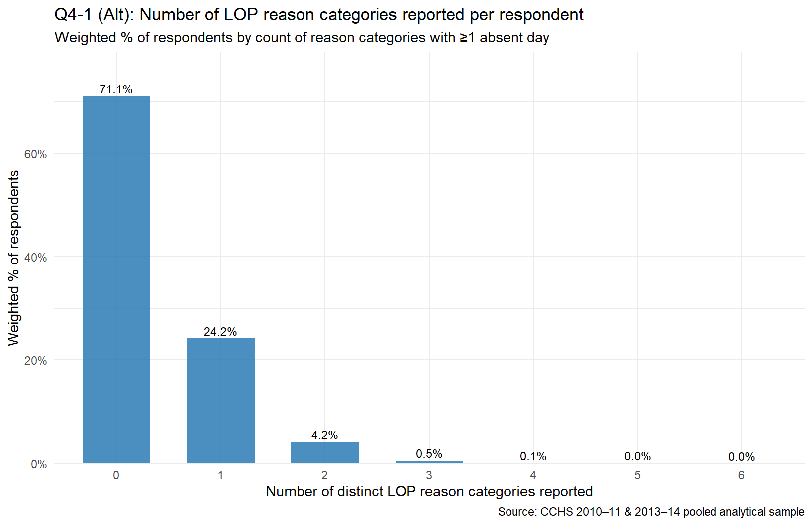
# Pairwise co-occurrence heatmap across the 8 LOP reason categories
lop_cols <- names(lop_components)
lop_labels <- unname(lop_components)
# Build pairwise co-occurrence matrix (unweighted counts — simpler to read)
cooccur_mat <- matrix(NA_real_, nrow = length(lop_cols), ncol = length(lop_cols),
dimnames = list(lop_labels, lop_labels))
positive_flags <- ds0 %>%
select(all_of(lop_cols)) %>%
mutate(across(everything(), ~ !is.na(.x) & .x > 0))
for (i in seq_along(lop_cols)) {
for (j in seq_along(lop_cols)) {
cooccur_mat[i, j] <- mean(
positive_flags[[lop_cols[i]]] & positive_flags[[lop_cols[j]]],
na.rm = TRUE
) * 100
}
}
g3_cooccur_data <- as.data.frame(cooccur_mat) %>%
tibble::rownames_to_column("reason_row") %>%
tidyr::pivot_longer(-reason_row, names_to = "reason_col", values_to = "pct_cooccur") %>%
mutate(
reason_row = factor(reason_row, levels = rev(lop_labels)),
reason_col = factor(reason_col, levels = lop_labels)
)
g31_lop_cooccurrence <- g3_cooccur_data %>%
ggplot(aes(x = reason_col, y = reason_row, fill = pct_cooccur)) +
geom_tile(colour = "white", linewidth = 0.5) +
geom_text(
aes(label = ifelse(pct_cooccur >= 0.5, sprintf("%.1f", pct_cooccur), "")),
size = 2.8
) +
scale_fill_distiller(
palette = "Blues",
direction = 1,
name = "% respondents\n(unweighted)"
) +
labs(
title = "Q4-1 (Alt): Pairwise co-occurrence of LOP reason categories",
subtitle = "Cell = % of respondents reporting ≥1 day for both row and column reasons (diagonal = prevalence)",
x = NULL,
y = NULL,
caption = "Source: CCHS 2010–11 & 2013–14 pooled analytical sample"
) +
theme_minimal(base_size = 10) +
theme(
axis.text.x = element_text(angle = 30, hjust = 1),
panel.grid = element_blank()
)
ggsave(
paste0(prints_folder, "g31_lop_cooccurrence.png"),
g31_lop_cooccurrence,
width = 8.5,
height = 5.5,
dpi = 300
)
print(g31_lop_cooccurrence)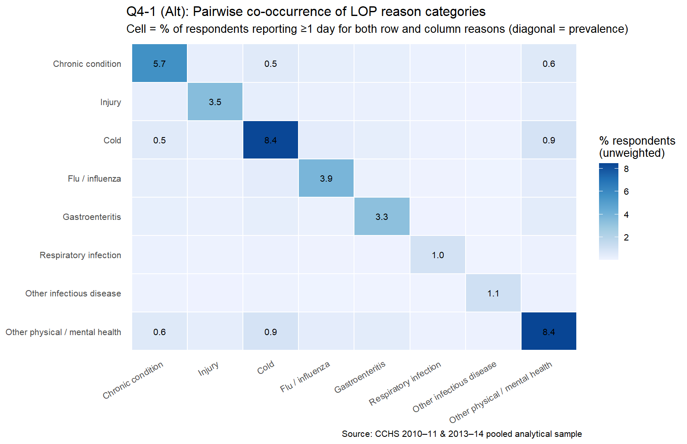
# ============================================================================
# ANALYSIS-POSITRON: Outcome variable and its components — six graph families
# gB1 Prevalence of each absence reason (horizontal bar, full sample)
# gB2 Distribution of days_absent_total — non-zeros only, log y-scale
# gB3 Side-by-side: total vs. chronic-only (log y-scale, faceted)
# gB4 Mean & median days per reason among reporters
# gB5 Role of chronic absence among those with any absence (3-group bar)
# gB6 Scatter of chronic days vs total days (bubble chart, 1:1 line)
# ============================================================================This section characterises the outcome variable (days_absent_total) and its primary chronic-condition component (days_absent_chronic) through six complementary visualisations. Together they address: how common each reason is, how many days each reason typically produces, how the full distribution of total absence looks, how total and chronic-only compare, and what structural role the chronic component plays relative to the total.
Question: What percentage of the full sample reported at least one absent day for each of the eight reasons?
# Prevalence of each absence reason: % of full sample with ≥1 day, by reason
gB1_data <- ds_lop_long %>%
group_by(reason_label) %>%
summarise(
n_total = n(),
wt_total = sum(.data[[weight_col]], na.rm = TRUE),
wt_positive = sum(.data[[weight_col]][has_days], na.rm = TRUE),
pct_weighted = wt_positive / wt_total * 100,
.groups = "drop"
) %>%
mutate(reason_label = forcats::fct_reorder(reason_label, pct_weighted))# Horizontal bar: weighted % of full sample reporting ≥1 day per reason
gB1_reason_prevalence <- gB1_data %>%
ggplot(aes(x = pct_weighted, y = reason_label)) +
geom_col(fill = "#2c7bb6", alpha = 0.85) +
geom_text(
aes(label = sprintf("%.1f%%", pct_weighted)),
hjust = -0.1, size = 3.2
) +
scale_x_continuous(
labels = label_percent(scale = 1),
expand = expansion(mult = c(0, 0.15))
) +
labs(
title = "gB1: Prevalence of each absence reason (full analytical sample)",
subtitle = "Weighted % of all respondents reporting ≥1 absent day for each health reason",
x = "Weighted % of respondents with ≥1 day absent",
y = NULL,
caption = "Source: CCHS 2010–11 & 2013–14 pooled analytical sample"
) +
theme_minimal(base_size = 11) +
theme(panel.grid.major.y = element_blank())
ggsave(
paste0(prints_folder, "gB1_reason_prevalence.png"),
gB1_reason_prevalence,
width = 8.5,
height = 5.5,
dpi = 300
)
print(gB1_reason_prevalence)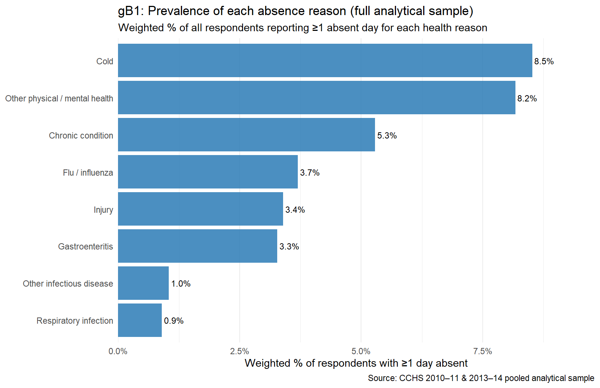
Question: What does the distribution of days_absent_total look like among those who missed at least one day?
# Distribution of days_absent_total restricted to non-zero values, for log-bar chart
n_total_obs <- nrow(ds0)
n_zero_obs <- sum(ds0$days_absent_total == 0, na.rm = TRUE)
pct_zero <- n_zero_obs / n_total_obs * 100
gB2_data <- ds0 %>%
filter(!is.na(days_absent_total), days_absent_total >= 1) %>%
count(days_absent_total, name = "n_respondents")# Bar chart: days_absent_total (non-zeros), log y-scale, one bar per integer value
gB2_days_total_dist <- gB2_data %>%
ggplot(aes(x = days_absent_total, y = n_respondents)) +
geom_col(fill = "#4575b4", alpha = 0.80, width = 0.85) +
scale_y_log10(
labels = label_comma(),
expand = expansion(mult = c(0, 0.15))
) +
scale_x_continuous(breaks = c(1, 5, 10, 15, 20, 30, 45, 60, 75, 90)) +
labs(
title = sprintf(
"gB2: Distribution of total absent days (non-zeros only, log y-scale)\n%s zeros excluded (%.1f%% of full sample)",
scales::comma(n_zero_obs), pct_zero
),
subtitle = "One bar per integer value of days_absent_total",
x = "Total absent days (days_absent_total)",
y = "Number of respondents (log scale)",
caption = "Source: CCHS 2010–11 & 2013–14 pooled analytical sample"
) +
theme_minimal(base_size = 11) +
theme(panel.grid.minor = element_blank())
ggsave(
paste0(prints_folder, "gB2_days_total_dist.png"),
gB2_days_total_dist,
width = 8.5,
height = 5.5,
dpi = 300
)
print(gB2_days_total_dist)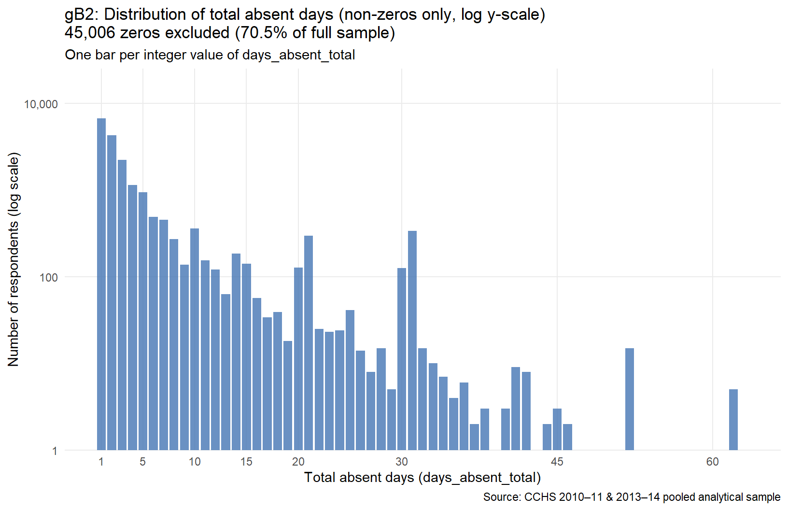
Question: How does the distribution of days_absent_chronic compare to days_absent_total?
# Side-by-side: days_absent_total vs days_absent_chronic (non-zeros, log y)
gB3_data <- bind_rows(
ds0 %>%
filter(!is.na(days_absent_total), days_absent_total >= 1) %>%
mutate(outcome = "Total absent days\n(days_absent_total)",
value = days_absent_total),
ds0 %>%
filter(!is.na(days_absent_chronic), days_absent_chronic >= 1) %>%
mutate(outcome = "Chronic-condition only\n(days_absent_chronic)",
value = days_absent_chronic)
) %>%
count(outcome, value, name = "n_respondents") %>%
mutate(outcome = factor(outcome,
levels = c("Total absent days\n(days_absent_total)",
"Chronic-condition only\n(days_absent_chronic)")))# Faceted log-scale histograms: total vs chronic-only distributions
gB3_total_vs_chronic <- gB3_data %>%
ggplot(aes(x = value, y = n_respondents)) +
geom_col(fill = "#4575b4", alpha = 0.80, width = 0.85) +
scale_y_log10(labels = label_comma(), expand = expansion(mult = c(0, 0.1))) +
scale_x_continuous(breaks = c(1, 5, 10, 20, 30, 60, 90)) +
facet_wrap(~ outcome, ncol = 2, scales = "free_x") +
labs(
title = "gB3: Distributions of total vs. chronic-only absent days (non-zeros, log y)",
subtitle = "Chronic-only is narrower and more concentrated; total reflects all 8 reasons",
x = "Days absent",
y = "Number of respondents (log scale)",
caption = "Source: CCHS 2010–11 & 2013–14 pooled analytical sample"
) +
theme_minimal(base_size = 11) +
theme(panel.grid.minor = element_blank())
ggsave(
paste0(prints_folder, "gB3_total_vs_chronic.png"),
gB3_total_vs_chronic,
width = 8.5,
height = 5.5,
dpi = 300
)
print(gB3_total_vs_chronic)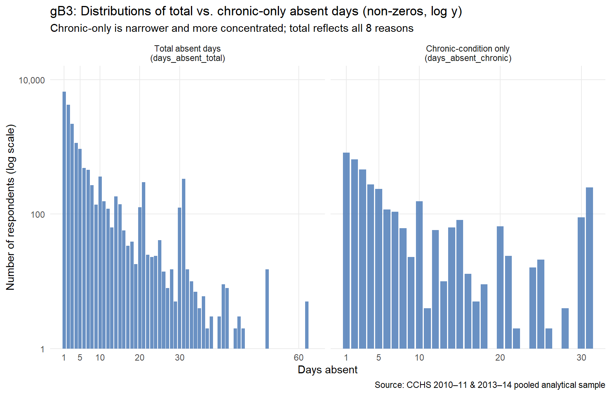
Question: Among those who reported a given reason, how many days did that reason typically produce?
# Mean and median days per reason, computed only among reporters (non-null, >0)
gB4_data <- ds_lop_long %>%
filter(has_days) %>%
group_by(reason_label) %>%
summarise(
mean_days = mean(days_reason, na.rm = TRUE),
median_days = median(days_reason, na.rm = TRUE),
n_reporters = n(),
.groups = "drop"
) %>%
mutate(reason_label = forcats::fct_reorder(reason_label, mean_days))# Horizontal bar (mean) + point overlay (median), among reporters only
gB4_mean_days_per_reason <- gB4_data %>%
ggplot(aes(x = mean_days, y = reason_label)) +
geom_col(fill = "#2c7bb6", alpha = 0.75, width = 0.65) +
geom_point(aes(x = median_days), colour = "#d73027", size = 3.5, shape = 18) +
geom_text(
aes(label = sprintf("mean=%.1f med=%.0f", mean_days, median_days)),
hjust = -0.05, size = 3.0
) +
scale_x_continuous(expand = expansion(mult = c(0, 0.30))) +
labs(
title = "gB4: Mean (bar) and median (diamond) days absent per reason — reporters only",
subtitle = "Restricted to respondents reporting ≥1 day for that reason; skew visible as mean >> median",
x = "Days absent (among reporters of that reason)",
y = NULL,
caption = "Source: CCHS 2010–11 & 2013–14 pooled analytical sample"
) +
theme_minimal(base_size = 11) +
theme(panel.grid.major.y = element_blank())
ggsave(
paste0(prints_folder, "gB4_mean_days_per_reason.png"),
gB4_mean_days_per_reason,
width = 8.5,
height = 5.5,
dpi = 300
)
print(gB4_mean_days_per_reason)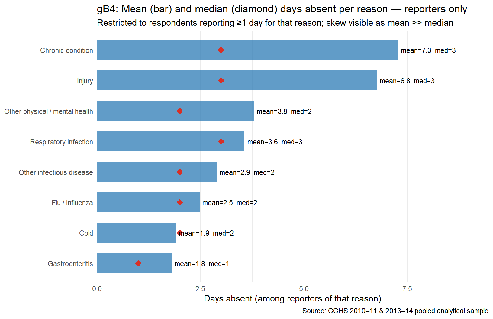
Question: Among workers who missed at least one day, how central is the chronic-condition component?
# Among respondents with days_absent_total > 0, classify by chronic role:
# A) Zero chronic days (non-chronic absence only)
# B) Entirely chronic (days_absent_chronic == days_absent_total)
# C) Mixed (some chronic + some other reasons)
gB5_data <- ds0 %>%
filter(!is.na(days_absent_total), days_absent_total > 0) %>%
mutate(
chr = ifelse(is.na(days_absent_chronic), 0, days_absent_chronic),
group = case_when(
chr == 0 ~ "No chronic days\n(non-chronic absence only)",
chr == days_absent_total ~ "All chronic\n(chronic = total)",
TRUE ~ "Mixed\n(some chronic + other reasons)"
),
group = factor(group, levels = c(
"No chronic days\n(non-chronic absence only)",
"Mixed\n(some chronic + other reasons)",
"All chronic\n(chronic = total)"
))
) %>%
count(group) %>%
mutate(pct = n / sum(n) * 100)# Bar chart: three chronic-role groups among absent respondents
gB5_chronic_role <- gB5_data %>%
ggplot(aes(x = group, y = pct, fill = group)) +
geom_col(width = 0.6, alpha = 0.85) +
geom_text(
aes(label = sprintf("%.1f%%\n(n = %s)", pct, scales::comma(n))),
vjust = -0.3, size = 3.5
) +
scale_y_continuous(
labels = label_percent(scale = 1),
expand = expansion(mult = c(0, 0.20))
) +
scale_fill_manual(values = c("#74add1", "#f46d43", "#d73027"),
guide = "none") +
labs(
title = "gB5: Role of chronic absence among respondents with any absence",
subtitle = "Three-group classification: no chronic days / mixed / entirely chronic",
x = NULL,
y = "% of respondents with ≥1 absent day",
caption = "Source: CCHS 2010–11 & 2013–14 pooled analytical sample"
) +
theme_minimal(base_size = 11) +
theme(panel.grid.major.x = element_blank())
ggsave(
paste0(prints_folder, "gB5_chronic_role.png"),
gB5_chronic_role,
width = 8.5,
height = 5.5,
dpi = 300
)
print(gB5_chronic_role)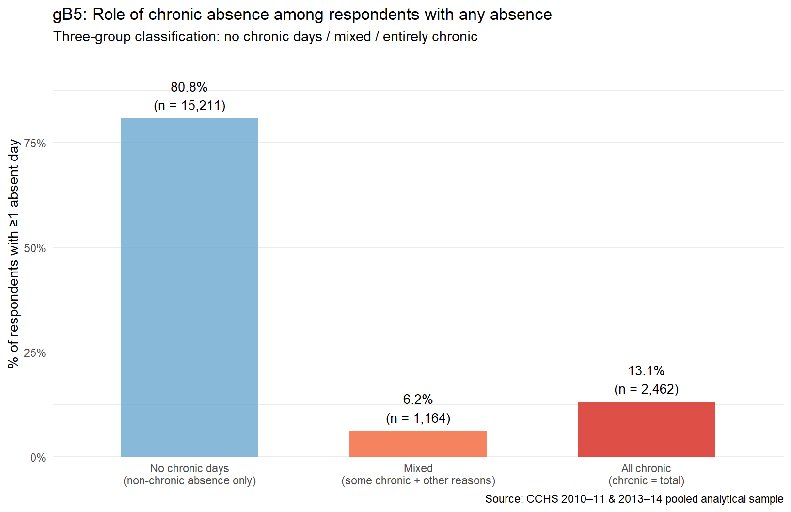
Question: What is the joint structure of days_absent_chronic and days_absent_total among those with both values positive?
# Bubble chart: chronic days vs total days (both > 0)
# Each bubble = unique (total, chronic) combination; size ∝ n respondents
gB6_data <- ds0 %>%
filter(!is.na(days_absent_total), days_absent_total > 0,
!is.na(days_absent_chronic), days_absent_chronic > 0) %>%
count(days_absent_total, days_absent_chronic, name = "n_combo")
# Diagonal extent for 1:1 reference line
gB6_max_axis <- max(gB6_data$days_absent_total, gB6_data$days_absent_chronic)# Bubble chart: chronic vs total days absent, 1:1 reference line
gB6_chronic_vs_total <- gB6_data %>%
ggplot(aes(x = days_absent_total, y = days_absent_chronic, size = n_combo)) +
geom_abline(slope = 1, intercept = 0, colour = "grey50", linetype = "dashed",
linewidth = 0.7) +
geom_point(alpha = 0.55, colour = "#4575b4") +
scale_size_continuous(
name = "# respondents\nat combination",
range = c(1, 12),
labels = label_comma()
) +
scale_x_continuous(breaks = c(1, 5, 10, 20, 30, 60, 90)) +
scale_y_continuous(breaks = c(1, 5, 10, 20, 30, 60, 90)) +
coord_fixed(xlim = c(0, gB6_max_axis), ylim = c(0, gB6_max_axis)) +
annotate("text", x = gB6_max_axis * 0.7, y = gB6_max_axis * 0.78,
label = "chronic = total\n(1:1 line)",
colour = "grey40", size = 3.2, hjust = 0) +
labs(
title = "gB6: Chronic days vs. total days absent — bubble chart (both > 0)",
subtitle = "Points on the dashed 1:1 line: all absence is chronic. Points below: mix of chronic + other reasons.",
x = "Total absent days (days_absent_total)",
y = "Chronic-condition absent days (days_absent_chronic)",
caption = "Source: CCHS 2010–11 & 2013–14 pooled analytical sample"
) +
theme_minimal(base_size = 11)
ggsave(
paste0(prints_folder, "gB6_chronic_vs_total.png"),
gB6_chronic_vs_total,
width = 7.0,
height = 7.0,
dpi = 300
)
print(gB6_chronic_vs_total)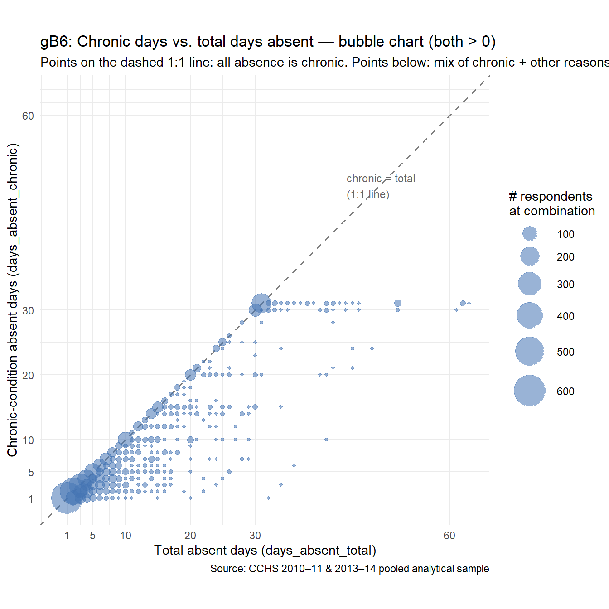
# nolint endcat("Rendered:", format(Sys.time(), "%Y-%m-%d %H:%M:%S"), "\n")Rendered: 2026-04-10 21:44:52 sessionInfo()R version 4.5.1 (2025-06-13 ucrt)
Platform: x86_64-w64-mingw32/x64
Running under: Windows 11 x64 (build 26200)
Matrix products: default
LAPACK version 3.12.1
locale:
[1] LC_COLLATE=Ukrainian_Ukraine.utf8 LC_CTYPE=Ukrainian_Ukraine.utf8
[3] LC_MONETARY=Ukrainian_Ukraine.utf8 LC_NUMERIC=C
[5] LC_TIME=Ukrainian_Ukraine.utf8
time zone: Europe/Kiev
tzcode source: internal
attached base packages:
[1] grid stats graphics grDevices datasets utils methods base
other attached packages:
[1] RColorBrewer_1.1-3 dichromat_2.0-0.1 lubridate_1.9.4 purrr_1.1.0 readr_2.1.5
[6] tibble_3.3.0 tidyverse_2.0.0 fs_1.6.6 scales_1.4.0 tidyr_1.3.1
[11] dplyr_1.2.0 stringr_1.5.2 forcats_1.0.1 ggplot2_4.0.0 magrittr_2.0.4
[16] knitr_1.50
loaded via a namespace (and not attached):
[1] generics_0.1.4 renv_1.1.5 stringi_1.8.7 hms_1.1.3 digest_0.6.37
[6] evaluate_1.0.5 timechange_0.3.0 fastmap_1.2.0 jsonlite_2.0.0 codetools_0.2-20
[11] textshaping_1.0.4 cli_3.6.5 rlang_1.1.7 bit64_4.6.0-1 withr_3.0.2
[16] yaml_2.3.10 tools_4.5.1 tzdb_0.5.0 assertthat_0.2.1 vctrs_0.7.1
[21] R6_2.6.1 lifecycle_1.0.5 htmlwidgets_1.6.4 bit_4.6.0 ragg_1.5.0
[26] arrow_22.0.0 pkgconfig_2.0.3 pillar_1.11.1 gtable_0.3.6 glue_1.8.0
[31] systemfonts_1.3.1 xfun_0.56 tidyselect_1.2.1 farver_2.1.2 htmltools_0.5.8.1
[36] rmarkdown_2.30 labeling_0.4.3 compiler_4.5.1 S7_0.2.0